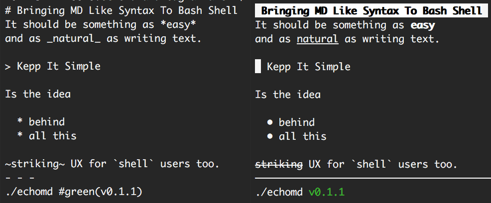

Echomd
A terminal oriented MD like syntax
echomd 
An md like conversion tool for shell terminals.
Fully inspired by the work of John Gruber,
echomd is a Markdown flavor
that targets terminals and consoles.
There are few inconsistencies across Windows, Mac, and Linux worlds,
when it comes to highlight, underline, or emphasize text in console,
and echomd is here to help and make it as simple as possible to improve
console textual layout.

How to use it
You can chose between the perl version, virtually natively available in every Linux and Mac terminal, or the nodejs version, usable both as module and executable.
npm install -g echomd is basically all you need to start using it.
Once installed, you can see a demo via echomd -h or echomd --help.
Please note the demo has duplicated surrounding chars on purpose,
so you can remember how to replicate a specific feature.
Features
Following the list of transformers implemented via echomd.
Code blocks
Code blocks are simply not parsed and preserved as they are. These can be both multiline, via 3 backticks, or single line.
echomd 'Some text
```
multi *line*
block
```
and `single _line_` too'
Horizontal lines
Using 3 or more *** or --- or ___,
with optional spaces in between,
produces a 72 length straight line,
simulating somehow a browser <hr>
Headers
There are two kind of headers, the most important one,
defined using only one # Hashtag,
which is a fully highlighted and bold header,
or two or more ## Hashtags for less important headers,
still highlighted compared to the rest of the text.
Bold
Using one or two asterisks would produce some bold text.
*this* or **this** will produce identical text,
preserving the semantic original meaning of the *,
showing up consistently bold in every platform.
The reason one star does not produce <em> tag equivalent,
is that italic text is unfortunately not widely supported (Linux only)
so it'd be bad UX for cross platform users if completely unrecognizable elsewhere.
Underline
Following same cross platform consistency reason,
using one or more underscores will produce an underlined text.
_this_ and __this__are equivalent, and it's possible combine
both bold and underline at once via *_this_* or _*that*_.
Strike
Visible on Linux only, and just to preserve original MD intent,
it is possible to strike text via one or more ~.
Bullets list
It is possible to create a nice bullets list simply using 2 or more spaces or tabs.
This is some text.
* this is a bullet
* this is another one
that will preserve spaces
to it's possible to go new line
* this is the last bullet
And this is some text.
Bear in mind, nested lists and all possible complicated and uncommon Web related scenarios are not supported. Keep It Simple (and handy) is the root of this project.
Quotes
It is possible to quote some text simply starting a line with >.
This is some text from somebody else.
> brace yourselves, echomd is coming
Colors and Background Colors
Software designed for the terminal cannot go too fancy with tags or styles, yet it can have colors or background colors (not both together).
The proposed syntax is pretty simple: #green(text) for text in green, and !#green(text) for text with a green background.
The list of currently supported colors (both text or background) is the same exposed through NodeJS util/inspect.colors module: bold, italic, underline, inverse, white, grey, black, blue, cyan, green, magenta, red, yellow.
As NodeJS moule
The module can output directly in console or produce the raw text using require('echomd').raw function.
License
echomd is under the MIT style License (MIT).